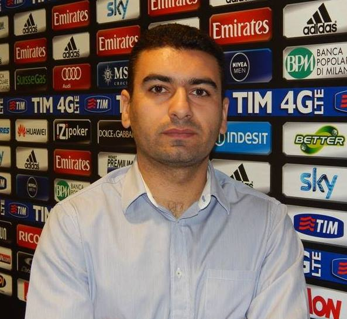

Lični podaci |
 |
| Ime i prezime | Branko Savković |
| Datum i mesto rođenja | 21. 01.1987. Aleksandrovac |
| Adresa | Mihaila Vukše 8/1, Zemun |
| Broj telefona | 0643592489 |
| brainacc@gmail.com |
| 2011 - 2014. | Matematički fakultet , Univerzitet u Beogradu
Master matematičar |
| 2006 - 2011. | Matematički fakultet, Univerzitet u Beogradu Diplomirani matematičar |
| 2002 - 2006. | Gimnazija - opšti smer |